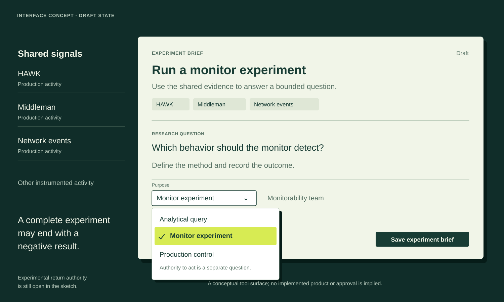

Compact working surface
Express the model through a draft task and its available choices.

Shared signal sources stay in the background. A small experiment brief holds the question, context and purpose. The pictured menu distinguishes analytics, research and production control. This is a static interface concept, not a working application.
Text equivalent and limits
A conceptual experiment-brief composer uses HAWK, Middleman, network events and other shared signals. Its illustrative draft asks which behavior a monitor should detect, and prompts a method and recorded outcome. A purpose menu distinguishes analytical query, monitor experiment and production control; monitor experiment is selected. Monitorability team is the relationship from the sketch. Authority to act is a separate question, and experimental return authority remains open. A valid negative result can complete the research. No implemented product, actual experiment or approval is implied.
This approved static reference interprets a control-program proposal. It is calibration material, not a deployed system or factual input for another artifact.